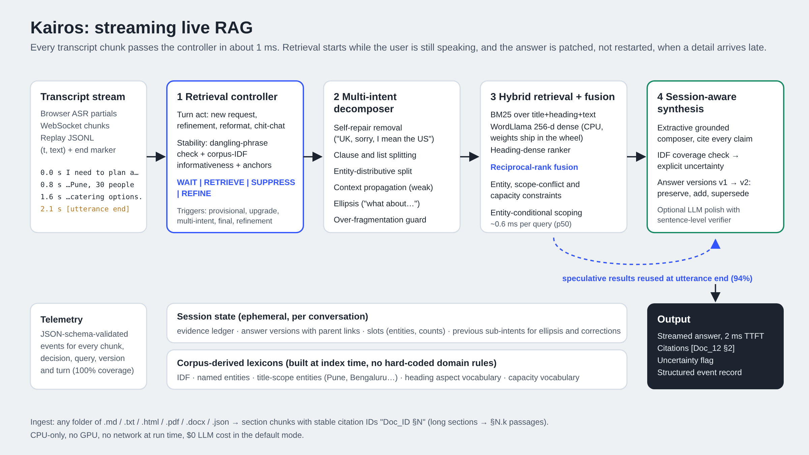

Streaming live RAG that starts retrieving while you are still speaking, splits one request into the questions it contains, and refines the answer instead of restarting.
It does nothing until the user stops, then pays the full retrieval round trip after they finish.
"Venues for 30 in Pune, the cancellation policy and catering" is three questions. One embedding blurs them.
"Actually, the trip was international." Restarting throws away the evidence the answer already had.
Kairos decides on every transcript chunk whether to wait, retrieve or skip, and keeps a versioned, cited answer per session.

| Theme 4 acceptance gate | Target | Test-1 / clean test-2 |
|---|---|---|
| G2 Retrieval starts before the utterance ends | ≥ 80% | 100% / 100%, 0% false triggers |
| G3 Multi-intent identification | ≥ 70% | 100% / 100% |
| G4 Claims supported by the cited section | ≥ 85% | 100% / 100%, 0 fabricated |
| G5 Late detail refines, never restarts | continuity | 100% / 100% |
| G1 one-command run · G6 schema-valid telemetry | pass · 100% | pass · 100% |
Retrieval at the right moment.